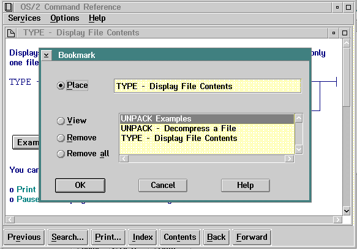

Bookmark
This choice displays the window shown in the following figure.

Bookmark Window
Place
Saves the user's place in the document being
viewed.
View
Redisplays
a specific place that was marked.
Remove
Deletes
one marked place.
Remove all
Deletes
all marked places.
Note
The
Bookmark selections are saved across invocations in a file with the same
name as that of the book but with a CP extension. Bookmarks are only available
in online books.
[Back: Print]
[Next: New window]